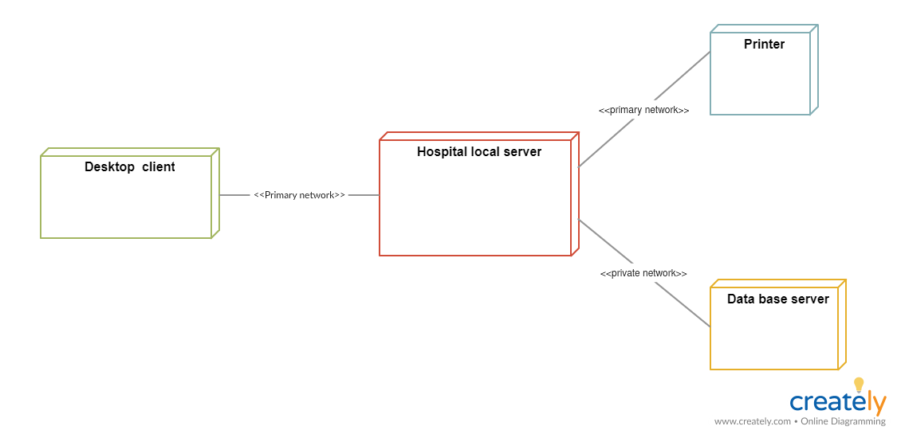

The Class Diagram is a really basic one, its main function is to build the static structure of the architecture or your app, so it doesnt really account for change but it works well for simple things, ill link a video here where you can learn more specefics ;)
The package diagram is very similar to the class diagram, but the key difference is that the package diagram is separated into segments where the contents are similar to avoid confusion in the case that theres lots of stuff
The Object Diagram is also similar to the class diagram, but it has 1 huge distinction and its that it focuses on the basic architecture of an application at a specific point in time, rather than a permanent model
The component Diagram has 2 types, the first type is to do with the physical design of hardware and is used to make sure that a piece of hardare has a all the relevant technologies, the second type is similar but is used predominantly on a conceptual base, but sometimes theyre physical if its similar to the conceptual item. I'll link my reference if you want more specifics ;)

This specific diagram shows the internals of the squares in ohter diagrams, the image is an example of a Composite Structure Diagram of a Component Diagram
